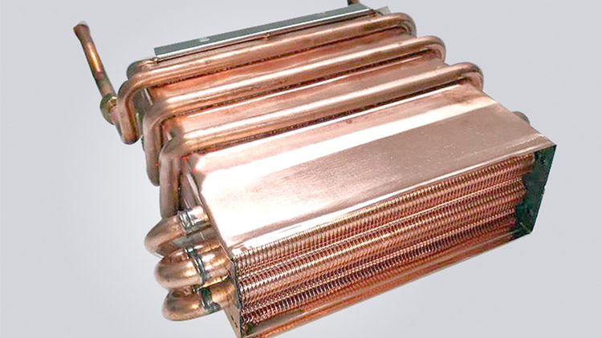

案例名称
Case国内热水器、厨房电器与热水系统制造商，在热水器装配环节需要对水箱焊接点做气密性测试。水箱水管由铜管缠绕而成，不同产品的水箱接头不一样，最终接口位置不易确定，需要配置能快速适配的测试接头。
客户需求
Challenge接口特征
水箱水管由铜管缠绕成型，末端接口位置随产品变化，不同型号的水箱接头并不统一。
测试任务
在装配环节对水箱焊接点完成气密性测试，需要快速、可靠的管口封堵与重复连接。
现场约束
需降低操作员的劳动强度，并尽量避免为每种水箱另外制作专用治具。
方案介绍
Solution
应用工程师根据客户的测试需求，推荐 GripSeal G72 系列凸缘管 / 异型管口专用密封接头：全铝合金本体、重量轻，不会对水箱铜管产生过多作用力；提供按钮或气压驱动，降低操作员的劳动强度；结构紧凑，密封对象为铜管末端接口，对接口位置要求不高，因此不需要再制作专用治具，节省成本。
方案优势
Advantages快速密封连接
一秒连接、瞬时密封，缩短装配测试工位的连接时间。
密封可靠
适应客户的压力测试环境，重复连接表现稳定。
轻便易操作
全铝合金本体重量轻，按钮或气压驱动降低操作强度。
免专用治具
对铜管末端接口位置要求不高，多型号适配，节省工装成本。
客户反馈
Feedback客户将 GripSeal 快速接头用于热水器水箱铜管测试后反馈：明显降低了操作强度，轻巧牢固、更为安全可靠，降低了测试误判风险；一秒连接、瞬时密封，产品及服务达到了预期效果。
应用拓展
Extended Applications同类快速密封连接方案还可延伸到热水器的其他测试项目：